Solving equations
_________________________________________________________________________________
Exercise 1.1
| > |
f := (x) -> 2*x^4-2222*x^3+224220*x^2-2222000*x+2000000; |
Whenever a polynomial  has a root
has a root 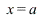
, the term 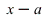
is a factor of  . This indicates that
. This indicates that  should be a multiple of the polynomial
should be a multiple of the polynomial 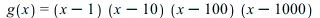
. However, the coefficient of  in
in  is
is 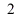
, whereas the coefficient of  in the expansion of
in the expansion of  is
is  . Thus, the multiplier must be
. Thus, the multiplier must be  , and we must have
, and we must have
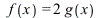
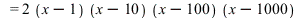
Maple confirms this as follows:
_________________________________________________________________________________
Exercise 1.2
| > |
y := x^4-x^3-x^2-x/8+1/64; |
| > |
sols := solve(y=0,{x}); |
In each of the four solutions, the sign attached to 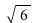
is the product of the signs attached to 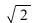
and 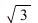
. Using this observation, we see that the four solutions are (1± )(1±
)(1± )/4.
)/4.
| > |
z := 16*x^3-24*x^2-6*x+2; |
| > |
simplify(subs(sols[1],z),symbolic); |
| > |
simplify(subs(sols[2],z),symbolic); |
| > |
simplify(subs(sols[3],z),symbolic); |
 |
(10) |
| > |
simplify(subs(sols[4],z),symbolic); |
 |
(11) |
| > |
seq(simplify(subs(sols[i],z),symbolic),i=1..4); |
_________________________________________________________________________________
Exercise 1.3
![Typesetting:-mprintslash([_EnvExplicit := true], [true])](images02/lab_sols02_33.gif) |
(13) |
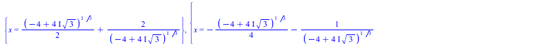
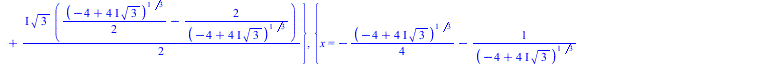
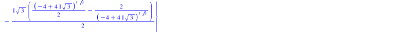 |
(15) |
| > |
sols := fsolve(y=0,{x}); |
The only negative root is 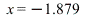
, which is sols[1]. Maple notation for the gradient  is diff(y,x). We can thus find the gradient at the negative root as follows:
is diff(y,x). We can thus find the gradient at the negative root as follows:
| Error, missing operator or `;` |
|
| > |
subs(sols[1],diff(y,x)); |
_________________________________________________________________________________
Exercise 1.4
| > |
g := (x) -> (b^2 - c^2 + (1 + c^2)*x)/(1-c^2 + c^2*x); |
(a)
| > |
sols := solve(g(x)=x,{x}); |
(b)
The above solutions involve division by  , so they do not make sense when
, so they do not make sense when  . We must therefore check separately what happens when
. We must therefore check separately what happens when 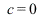
. In that case,  simplifies as follows:
simplifies as follows:
The equation  thus becomes
thus becomes 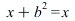
. This is always true if  , and never true if
, and never true if 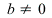
`(b, 0); "_noterminate" align="center" border="0">.
(c) Now return to the case 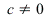
`(c, 0); "_noterminate" align="center" border="0">. The two solutions can then be written as 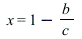
and 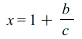
. These are the same (and both equal to  ) if
) if 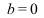
, but are different otherwise.
(d) Our conclusion is as follows:
- If
 then the only solution to
then the only solution to  is
is  .
.
- If

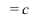
then there are no solutions.
- If

 then there are precisely two different solutions, namely
then there are precisely two different solutions, namely 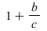
and 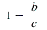
.
_________________________________________________________________________________
Exercise 2.1
| > |
f := (x) -> sin(Pi*x+exp(-x)); |
(a)
The graph looks rather like a sine wave, with roots at  ,2,3,4 and so on. This makes sense, because as soon as
,2,3,4 and so on. This makes sense, because as soon as  becomes reasonably large, the term
becomes reasonably large, the term 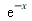
becomes very small, so  is close to
is close to 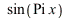
. The positive roots of  are exactly
are exactly 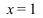
,2,3,4 and so on, so we expect the roots of 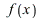
to be approximately the same.
(b) We now find some roots more precisely:
| > |
seq(fsolve(f(x)=0,x=n),n=1..10); |
(c)
| > |
r := (n) -> n-exp(-n)/Pi-exp(-2*n)/Pi^2; |
| > |
seq(evalf(r(n)),n=1..10); |
This is very close to our answer in (b). We can calculate the differences as follows:
| > |
seq(fsolve(f(x)=0,x=n)-evalf(r(n)),n=1..10); |
_________________________________________________________________________________
Exercise 3.1
(a)
| > |
plot(tan(Pi*x)^2-3,x=-3..3,-3..3,numpoints=200); |
(b)
The roots are at , , , , , , , , , , , and so on. In other words, for every integer  , there is a root at , and another one at .
, there is a root at , and another one at .
(c)
| > |
solve(tan(Pi*x)^2=3,{x}); |
(d)
| > |
_EnvAllSolutions := true; |
![Typesetting:-mprintslash([_EnvAllSolutions := true], [true])](images02/lab_sols02_107.gif) |
(30) |
| > |
solve(tan(Pi*x)^2=3,{x}); |
_________________________________________________________________________________
Exercise 4.1
| > |
eqns := {
x/2 + y/3 + z/4 = 1,
x/3 + y/4 + z/5 = 2,
x/4 + y/5 + z/6 = 3
}; |
| > |
sol := solve(eqns,{x,y,z}); |
| > |
sol := solve({x/2+y/3+z/4=1,x/3+y/4+z/5=2,x/4+y/5+z/6=3},{x,y,z}); |
![Typesetting:-mprintslash([sol := {x = 132, y = -600, z = 540}], [{x = 132, y = -600, z = 540}])](images02/lab_sols02_111.gif) |
(34) |
_________________________________________________________________________________
Exercise 4.2
(a)
| > |
solve({p+q+r=0,p+2*q+3*r=1}); |
Note the equation in the solution, indicating that  can take any value. This means that there are infinitely many different solutions.
can take any value. This means that there are infinitely many different solutions.
(b)
| > |
solve({u+v=1001,u+2*v=1002,u+3*v=1006}); |
| > |
[solve({u+v=1001,u+2*v=1002,u+3*v=1006})]; |
Maple gives an empty response, indicating that there are no solutions. This is easy to see directly: if we subtract the first two equations we get , whereas subtracting the second and third equations gives , showing that the equations are not consistent.
(c)
| > |
solve({
x + y + z = 2,
x + 2*y + 3*z = 2,
x + 4*y + 9*z = 2
},
{x,y,z}
); |
This has a unique, fully-determined solution.